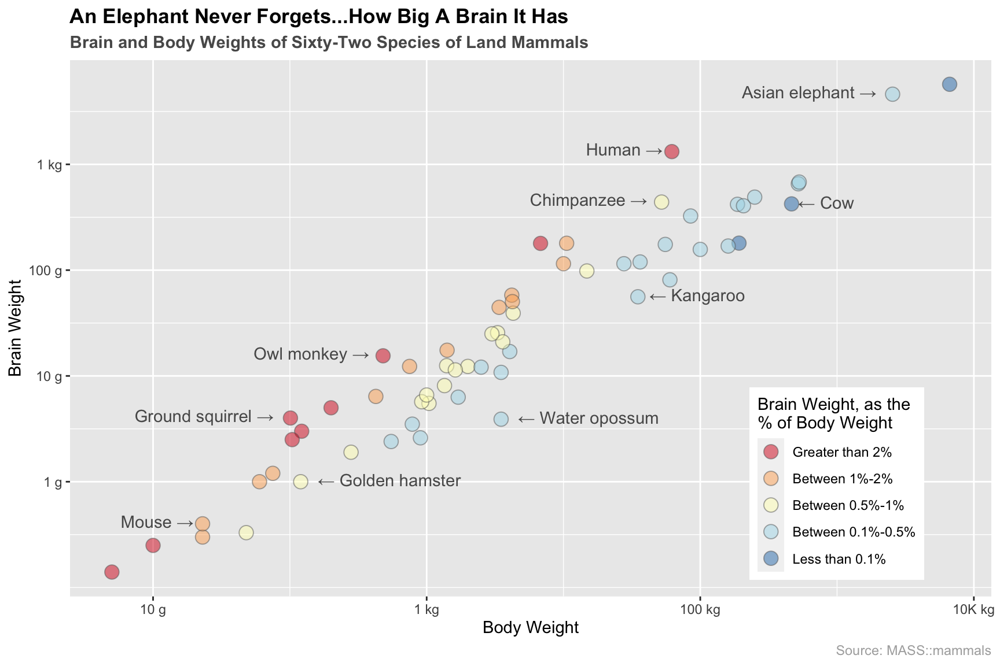
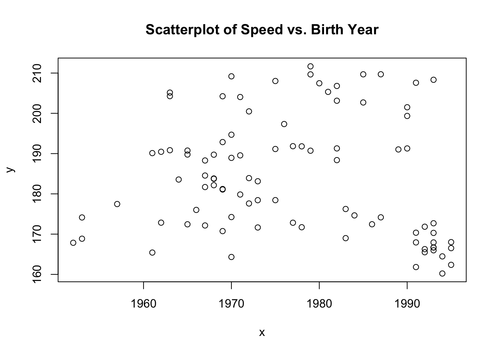
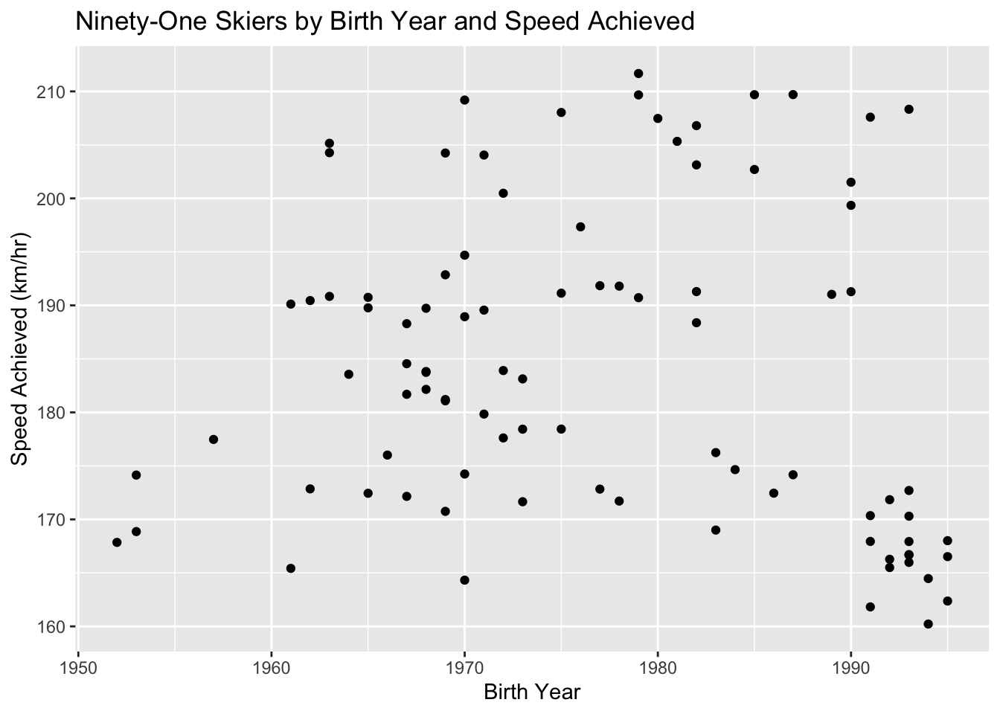
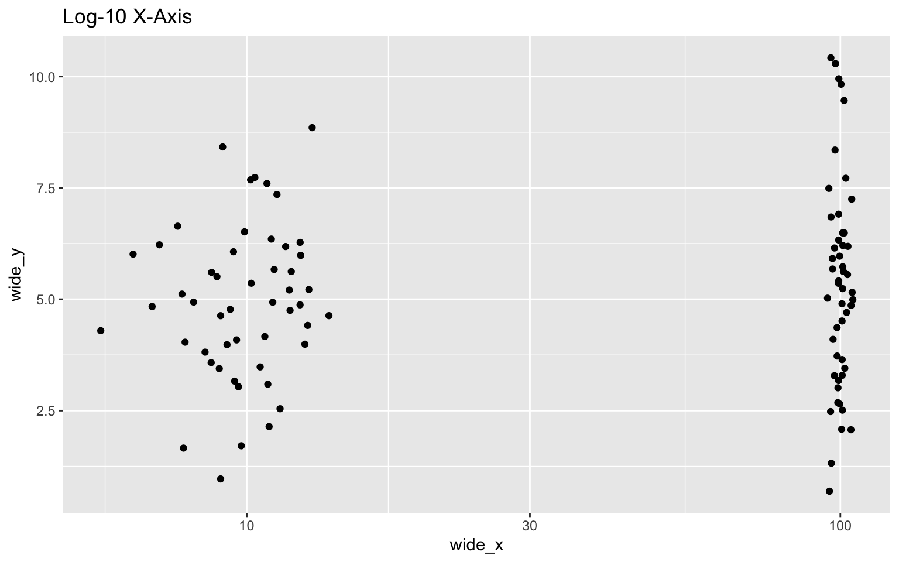
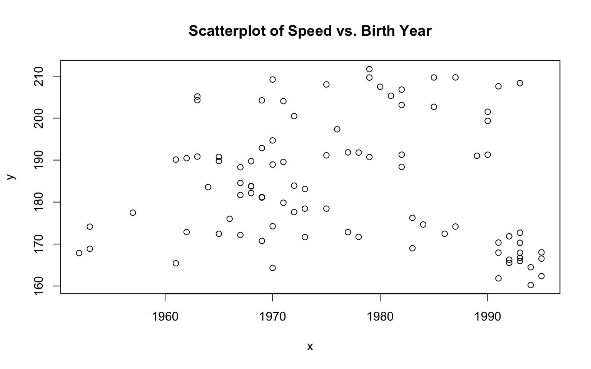
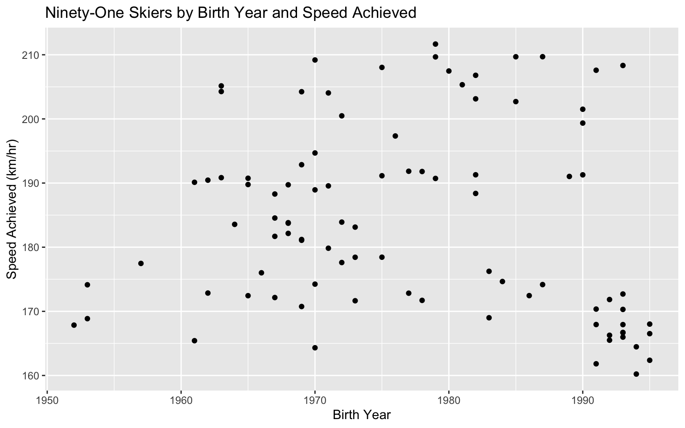
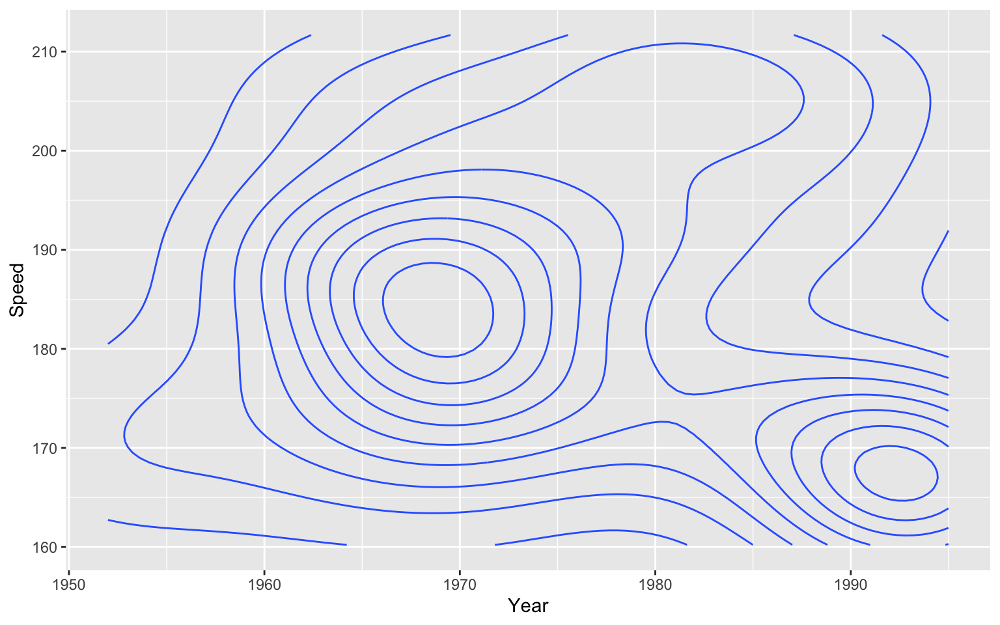
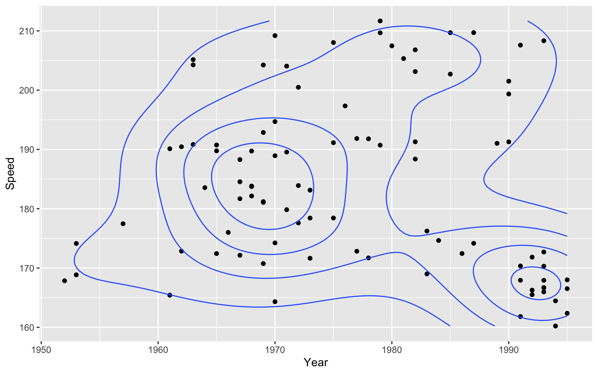

Chapter 10 Korean translation of scatterplot
산점도
by Matthew Lim
*Source: https://edav.info/scatter.html
10.1 개요
R을 이용해 산점도를 그리는 방법
10.2 요약
예시
지상에 사는 포유류 62종의 뇌무게와 몸무게 사이의 관계

사용된 코드:
library(ggplot2) # 그래프
mammals <- MASS::mammals
# 색상 비율
ratio <- mammals$brain / (mammals$body*1000)
ggplot(mammals, aes(x = body, y = brain)) +
# 색상별로 그룹지정 후 포인트 그리기
geom_point(aes(fill = ifelse(ratio >= 0.02, "#0000ff",
ifelse(ratio >= 0.01 & ratio < 0.02, "#00ff00",
ifelse(ratio >= 0.005 & ratio < 0.01, "#00ffff",
ifelse(ratio >= 0.001 & ratio < 0.005, "#ffff00", "#ffffff"))))),
col = "#656565", alpha = 0.5, size = 4, shape = 21) +
# 데이터 포인트에 대한 텍스트 삽입
geom_text(aes(label = ifelse(row.names(mammals) %in% c("Mouse", "Human", "Asian elephant", "Chimpanzee", "Owl monkey", "Ground squirrel"),
paste(as.character(row.names(mammals)), "→", sep = " "),'')),
hjust = 1.12, vjust = 0.3, col = "grey35") +
geom_text(aes(label = ifelse(row.names(mammals) %in% c("Golden hamster", "Kangaroo", "Water opossum", "Cow"),
paste("←", as.character(row.names(mammals)), sep = " "),'')),
hjust = -0.12, vjust = 0.35, col = "grey35") +
# 범례/색상 커스터마이제이션
scale_fill_manual(name = "Brain Weight, as the\n% of Body Weight",
# values = c('#e66101','#fdb863','#b2abd2','#5e3c99'),
values = c('#d7191c','#fdae61','#ffffbf','#abd9e9','#2c7bb6'),
breaks = c("#0000ff", "#00ff00", "#00ffff", "#ffff00", "#ffffff"),
labels = c("Greater than 2%", "Between 1%-2%", "Between 0.5%-1%", "Between 0.1%-0.5%", "Less than 0.1%")) +
# 포맷팅
scale_x_log10(name = "Body Weight", breaks = c(0.01, 1, 100, 10000),
labels = c("10 g", "1 kg", "100 kg", "10K kg")) +
scale_y_log10(name = "Brain Weight", breaks = c(1, 10, 100, 1000),
labels = c("1 g", "10 g", "100 g", "1 kg")) +
ggtitle("An Elephant Never Forgets...How Big A Brain It Has",
subtitle = "Brain and Body Weights of Sixty-Two Species of Land Mammals") +
labs(caption = "Source: MASS::mammals") +
theme(plot.title = element_text(face = "bold")) +
theme(plot.subtitle = element_text(face = "bold", color = "grey35")) +
theme(plot.caption = element_text(color = "grey68")) +
theme(legend.position = c(0.832, 0.21))이 데이터셋에 대한 더 많은 정보가 궁금하시다면 콘솔에 ?MASS::mammals을 입력하세요.
맨 오른쪽 상단 끝에 있는 점이 궁금하셨다면 그 점은 다른 종의 코끼리입니다. 좀 더 구체적으론 아프리카 코끼리입니다. 아프리카 코끼리도 자기 뇌가 얼마나 큰지 잊지않죠.
10.3 간단한 예시
이전 예시는 너무 복잡했어요! 좀 더 간단하게 부탁해요!
이번엔 GDAdata에서 SpeedSki 데이터셋을 통해 참가자가 태어난 해와 그들의 속도의 관계에 대해 알아봅시다:
## Rank Bib FIS.Code Name Year Nation Speed Sex Event
## 1 1 61 7039 ORIGONE Simone 1979 ITA 211.67 Male Speed One
## 2 2 59 7078 ORIGONE Ivan 1987 ITA 209.70 Male Speed One
## 3 3 66 190130 MONTES Bastien 1985 FRA 209.69 Male Speed One
## 4 4 57 7178 SCHROTTSHAMMER Klaus 1979 AUT 209.67 Male Speed One
## 5 5 69 510089 MAY Philippe 1970 SUI 209.19 Male Speed One
## 6 6 75 7204 BILLY Louis 1993 FRA 208.33 Male Speed One
## 7 7 67 7053 PERSSON Daniel 1975 SWE 208.03 Male Speed One
## no.of.runs
## 1 4
## 2 4
## 3 4
## 4 4
## 5 4
## 6 4
## 7 410.3.1 base R을 이용한 산점도
x <- SpeedSki$Year
y <- SpeedSki$Speed
# 그래프 삽입
plot(x, y, main = "Scatterplot of Speed vs. Birth Year")
두개의 변수만 있으면 아주 간단하게 Base R을 통해 산점도를 그릴 수 있습니다. 산점도를 통해 범주 변수를 그릴 수도 있지만 대게 연속 변수를 그릴 때 사용됩니다.
10.3.2 ggplot2를 이용한 산점도
library(GDAdata) # 데이터
library(ggplot2) # 그래프
# 메인 그래프
scatter <- ggplot(SpeedSki, aes(Year, Speed)) + geom_point()
# 타이틀, 축 이름 추가
scatter +
labs(x = "Birth Year", y = "Speed Achieved (km/hr)") +
ggtitle("Ninety-One Skiers by Birth Year and Speed Achieved")
ggplot2을 이용해서 산점도를 아주 간단하게 그릴 수 있습니다. geom_point() 코드를 통해 한 그래프에 2개의 aesthetic을 그릴 수 있습니다. 또한, 추가적인 포맷을 통해 그래프를 좀 더 깔끔하게 만드는데 더 욱 더 용이합니다. (실질적으로 필요한건 데이터와 aesthetics과 geom입니다).
10.4 이론
산점도를 통해 변수간의 상관관계를 아주 쉽게 이해할 수 있습니다. 예를 들어 section 13.2의 산점도를 보면 포유류의 뇌무게와 몸무게가 정적 상관관계를 가지고 있는걸 볼 수 있습니다. 산점도를 통해 변수들이 상관관계가 있는지, 있다면 정적 상관인지 부적 상관인지 알 수 있습니다. 하지만 상관관계를 원인과 혼동하시면 안됩니다!
이제 어떻게하면 산점도에 대한 이해도를 높힐 수 있을지 알아봅시다.
- For more info about adding lines/contours, comparing groups, and plotting continuous variables check out Chapter 5 of the textbook.
10.5 사용 시기
산점도는 변수들간의 관계를 알아볼때 유용합니다. 당신이 변수들간의 관계가 궁금하다면 산점도부터 시작해보세요.
10.6 고려 사항
10.6.1 겹치는 데이터
비슷한 값의 데이터는 산점도에서 겹쳐질 것이며 이는 문제를 일으킬 수 있습니다. 해결방안으로 alpha blending이나 jittering을 고려해보세요 (Overlapping Data의 Iris Walkthrough섹션의 링크).
10.6.2 스케일링
스케일링이 어떻게 산점도의 해석을 바꿀 수 있는지 고려하세요:
library(ggplot2)
num_points <- 100
wide_x <- c(rnorm(n = 50, mean = 100, sd = 2),
rnorm(n = 50, mean = 10, sd = 2))
wide_y <- rnorm(n = num_points, mean = 5, sd = 2)
df <- data.frame(wide_x, wide_y)
ggplot(df, aes(wide_x, wide_y)) +
geom_point() +
ggtitle("Linear X-Axis")

10.7 변경
10.7.1 등고선
등고선은 데이터의 밀도에 대해 알려줍니다.
SpeedSki 데이터셋을 이용해 등고선에 대해 알아봅시다.
geom_density_2d()을 사용해 등고선을 추가할 수 있습니다:

등고선은 다른 그래프와 사용시 가장 효율적입니다:

10.7.2 산점도 행렬
여러개의 매개변수를 비교하고 싶다면 사점도 행렬을 사용하는 것을 고려해보세요. 산점도 행렬을 통해 좀 더 효율적으로 변수들을 비교할 수 있습니다.
ggplot2movies패키지의 movies 데이터셋을 통해 산점도 행렬에 대해 더 자세히 알아봅시다.
base R의 plot() 펑션을 통해 산점도 행렬을 그릴 수 있습니다:
library(ggplot2movies) # 데이터
library(dplyr) # 데이터 편집
index <- sample(nrow(movies), 500) #샘플 데이터
moviedf <- movies[index,] # 데이터 프레임
splomvar <- moviedf %>%
dplyr::select(length, budget, votes, rating, year)
plot(splomvar)
base R의 plot() 펑션을 개인적인 연구를 위해 사용하는건 괜찮지만 프레젠테이션을 위해 해당 펑션을 사용하는 것은 추천드리지 않습니다. 해당 펑션을 사용해 산점도 행렬을 그릴 시 Hermann grid illusion 때문에 해당 그래프를 해석하기게 매우 어렵습니다.
lattice의 splom() 펑션을 통해 이 문제를 해결할 수 있습니다:

10.8 추가 자료
- Quick-R article Base R을 통한 산점도. 산점도 행렬, 고밀도, 3D 버전의 간단한 예시부터 어려운 예시까지 있습니다.
- STHDA Base R: Base R을 통한 산점도에 대한 자료. 더 많은 예시가 있습니다.
- STHDA ggplot2:
ggplot2를 통한 산점도에 대한 자료. 포맷과 face wraps에 대해 더 자세히 알려줍니다. - Stack Overflow
geom_point()의 포인트에 라벨을 더해주는 방법 - ggplot2 cheatsheet: 언제나 가지고 있으면 좋은 자료.